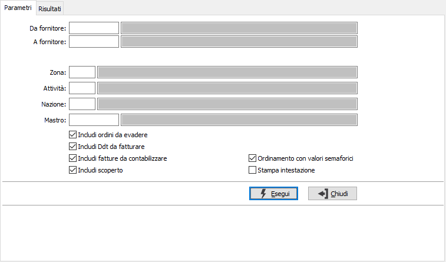
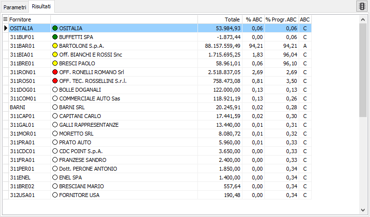
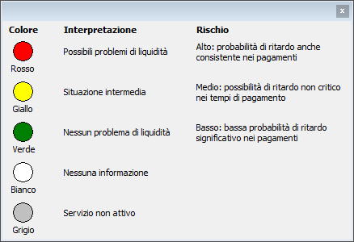

Analisi ABC su rischio
La procedura richiede tutta una serie di parametri di selezione tra cui la selezione di range di fornitori, singole zone, attività, nazioni e mastri in modo da poter ampliare o restringere il campo di analisi. è possibile definire il calcolo del rischio includendo oppure escludendo ordini da evadere, ddt da fatturare, fatture da contabilizzare e scoperto agendo sulle apposite caselle di spunta. Nel caso sia attivo il servizio Credit Shield e l'utente connesso sia configurato come utente Company Shield ed abbia l'autorizzazione alla visualizzazione dei semafori è presente anche la casella di spunta "Ordinamento con valori semaforici" che se non spuntata o non presente ordina il risultato secondo la classificazione ABC. Nel caso si voglia effettuare anche la stampa è possibile stampare anche i limiti inseriti spuntando la casella "Stampa intestazione".

Una volta impostati i criteri di selezione viene presentato l’elenco dei valori.

Per ogni fornitore viene visualizzato l'indicatore semaforico relativo, il valore totale, la percentuale ABC calcolata e progressiva e la classificazione ABC; nel caso l'utente connesso non abbia l'autorizzazione alla visualizzazione dei semafori non compariranno gli indicatori semaforici nella colonna della ragione sociale.
Dalla pagina Risultati, tramite i pulsanti presenti nella Toolbar sarà possibile effettuare la stampa.
Tramite il bottone è possibile ottenere la visualizzazione della legenda.
